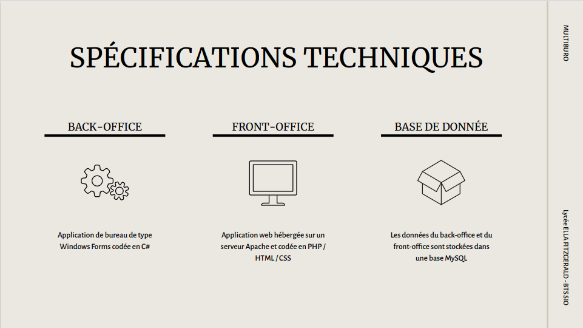
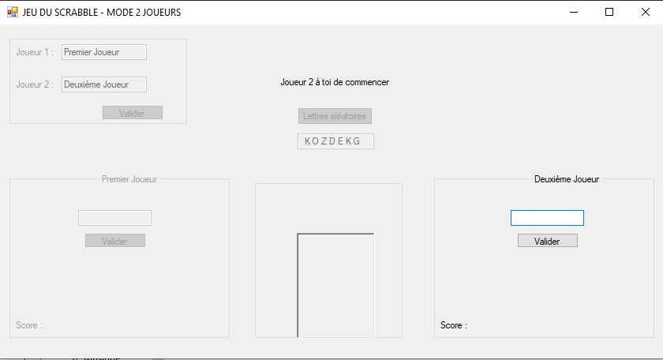

Multiburo
Pour un projet de première année, j'ai créé la base de donnée, le back-office et front-office. La société MULTIBURO souhaitait se doter d’une solution logicielle permettant de gérer la réservation des espaces de travail mis à disposition des clients (locataires). MULTIBURO dispose de 2 bâtiments fonctionnant de deux façons différentes.

Scrabble mode 2 joueurs
Lors des cours, j'ai créé une application de Scrabble où deux joueurs s'affrontent et doivent donner un mot avec 7 lettres tirées au hasard. Chaque mot rapporte un certain nombre de points. A la fin des 10 tours, l'application affiche le nom du gagnant et les mots donnés par le gagnant.

Gourmetise
Lors des cours, j'ai créé une application de Scrabble où deux joueurs s'affrontent et doivent donner un mot avec 7 lettres tirées au hasard. Chaque mot rapporte un certain nombre de points. A la fin des 10 tours, l'application affiche le nom du gagnant et les mots donnés par le gagnant.